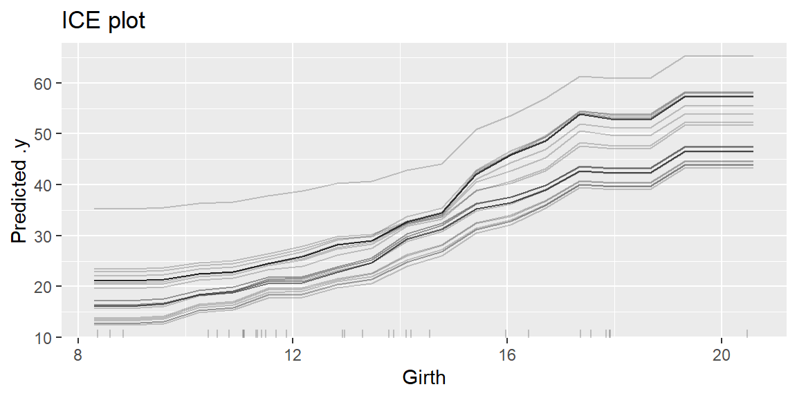
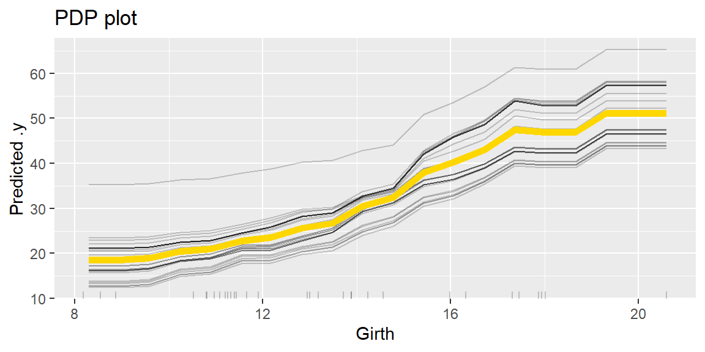
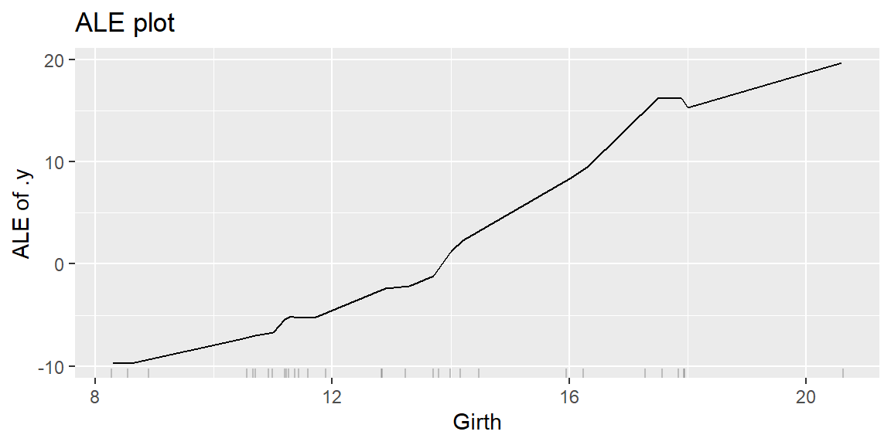
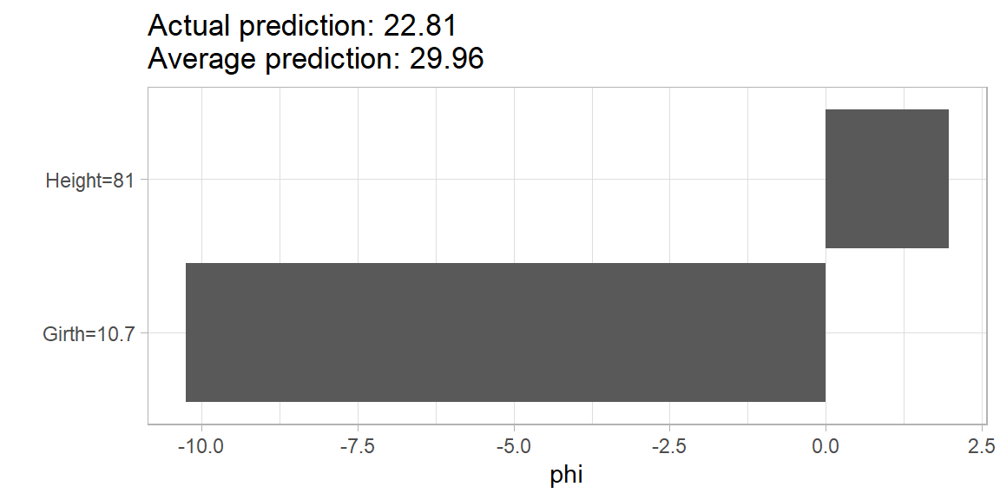
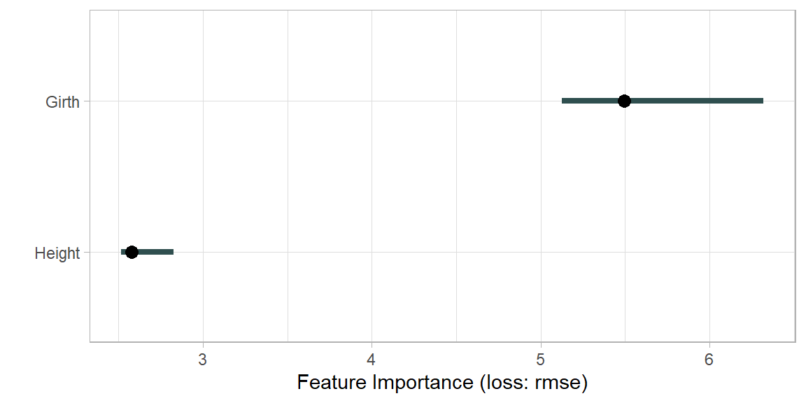
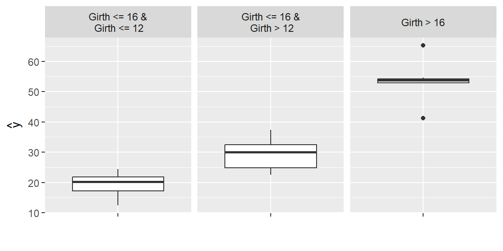
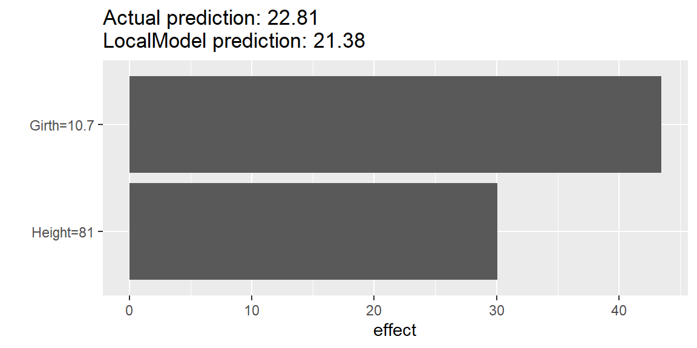

# treesデータセットを読み込み、ランダムフォレストモデルを作成する。
data(trees)
model_rf <- ranger::ranger(Volume~., trees)
X <- dplyr::select(trees, -Volume)20 iml
20.1 パッケージの概要
imlパッケージは、予測モデルを解釈するために開発された可視化手法を統一的な記法で実行するためのパッケージです。imlパッケージでは、予測モデルにPredictor$new関数を適用することで、Predictorオブジェクトが作成されます。このPredictorオブジェクトに対して、imlパッケージのさまざまな関数を適用することで、PDP、ICE、SHAPなどのプロットを簡単に作成することができます。
ここに挙げた機械学習の解釈手法については、パッケージの作者 Christoph Molnar 氏によるウェブ書籍 Interpretable Machine Learning（邦訳） をご参照ください。
ここでは、非常に簡単な例として、treesデータセットのVolumeを、GirthとHeightという二つの特徴量から予測するモデルを作成し、そのモデルに対して解釈手法を適用してみましょう。
20.2 モデル解釈のためのPredictorオブジェクトを生成する
Predictor$new()関数は、さまざまなパッケージのもとで作成された予測モデルを、imlパッケージの他のクラスや関数に対応するように加工するための関数です。加工後の予測モデルは、Predictorオブジェクトと呼ばれます。
library(iml)
predictor <- (
(Predictor$new(model_rf, data = X, y = trees$Volume))
)20.3 特徴量と予測値の関係を解釈する
PredictorオブジェクトにFeatureEffect$new()関数を適用すると、ICEプロット、PDプロット、ALEプロットなどを作図することができます。
ICE（Individual Conditional Expectation）プロットは、注目している特徴量の値だけが違っていた場合に予測値がどのように変化するかを、個々の予測ごとに可視化するものです。
PD（Partial Dependence）プロットは、データ全体のICEプロットを平均したものにほかならず、注目している特徴量の値が変化したときに予測値が平均的にどのように変化するかを表していると解釈できます。
ALE（Accumulated Local Effects）プロットは、PDと同様、注目している特徴量の変化に対応する予測値の変化を表します。PDでは、注目している特徴量の値 x によらずにデータ全体の分布を使って予測値の変化を平均しますが、ALEでは、特徴量の値が x であるときの効果を、データの中でその特徴量の値が x に近いものだけを抽出した部分データにおける予測値の変化を平均することによって計算します。
library(dplyr) # データ処理に利用
library(ggplot2) # プロットの作成や調整に利用
# iceプロットを作図する。
ice <- predictor %>%
FeatureEffect$new(feature = "Girth", method = "ice")
ice$plot() + labs(title = "ICE plot")
# pdプロットを作図する。
pdp <- predictor %>%
FeatureEffect$new(feature = "Girth", method = "pdp+ice")
pdp$plot() + labs(title = "PDP plot")
# aleプロットを作図する。
ale <- predictor %>%
FeatureEffect$new(feature = "Girth", method = "ale")
ale$plot() + labs(title = "ALE plot")
20.4 個別の予測における特徴量の寄与を解釈する
PredictorオブジェクトにShapley$new()関数を適用すると、SHAP（SHapley Additive exPlanation）プロットを作図することができます。SHAP は、個別の予測値と平均的な予測値との差を、ゲーム理論的手法によって特徴量ごとの寄与に分解したものです。ここでは、5 番目のインスタンスに対する予測への特徴量ごとの寄与を表示してみます。HAPプロットを作図することができます。
shap <- predictor %>%
Shapley$new(x.interest = X[5, ])
shap$plot() + theme_light() + theme(legend.position='null')
20.5 モデルにおける特徴量の重要度を解釈する
PredictorオブジェクトにFeatureImp$new()関数を適用すると、PFI（Permutation Feature Importance）プロットを作図することができます。PFI は、「データの中で特定の特徴量だけをランダムに並び替えたときに、予測精度がどの程度低下するか」をその特徴量の重要度として解釈するものです。
pfi <- predictor %>% FeatureImp$new(loss="rmse")
plot(pfi) + theme_light()
20.6 サロゲートモデルを構築する
PredictorオブジェクトにTreeSurrogate$new()関数を適用すると、決定木によるサロゲートモデルを構築することができます。サロゲートモデルとは、予測モデルを理解しやすいシンプルな関数で近似することによって得られる予測モデルのことで、ここでは、深さ2の決定木という非常に簡単な予測モデルに変換しています。
tree <- predictor %>% TreeSurrogate$new(maxdepth = 2)Loading required package: partykitLoading required package: libcoinLoading required package: mvtnormplot(tree)
PredictorオブジェクトにLocalModel$new()関数を適用すると、特定の予測に関して LIME（Local Interpretable Model-agnostic Explanations）による局所的なサロゲートモデルを構築し、各特徴量の寄与を分解することができます。なお、LIMEは、注目するデータとその近傍データ（または近いデータを重視する加重データ）を用いて、正則化回帰などによって解釈しやすい予測モデルを構築する手法です。
lime <- predictor %>% LocalModel$new(x.interest = X[5, ], k = 2)Loading required package: glmnetLoaded glmnet 4.1-8Loading required package: gowerlime$results[, c("feature.value", "beta", "effect")] feature.value beta effect
Girth Girth=10.7 4.0534826 43.37226
Height Height=81 0.3402339 27.55895plot(lime)
20.7 参考資料
iml パッケージには、ここで紹介した手法以外にもさまざまな手法が実装されています。以下のウェブ書籍は、機械学習の解釈手法を紹介するものとして非常に有名です。 Christoph Molnar, Interpretable Machine Learning, A Guide for Making Black Box Models Explainable. https://christophm.github.io/interpretable-ml-book/（邦訳）